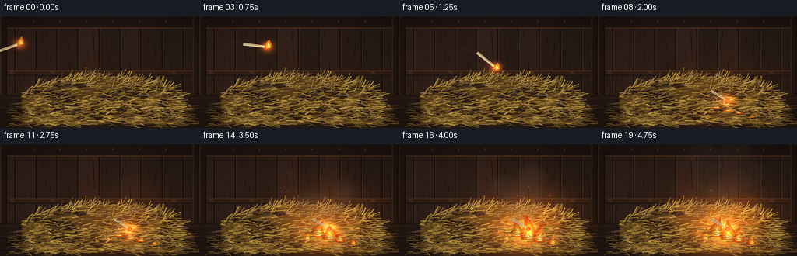
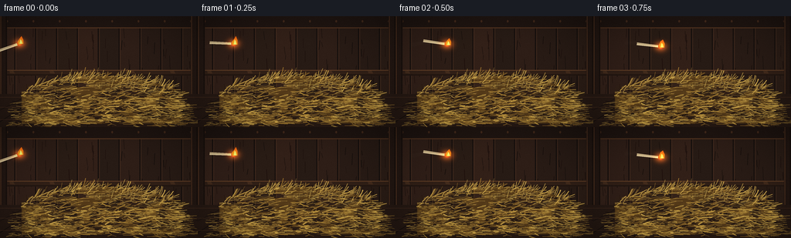
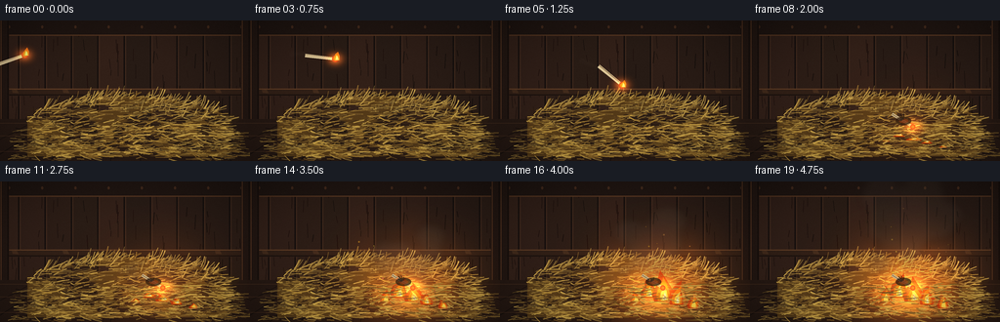
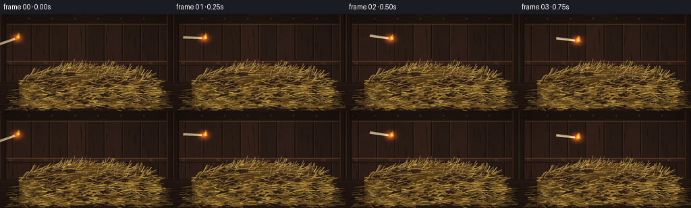

CODING AGENTS AS PIXEL WORLD MODELS
traex/DeepSeek-V4.1-Flash · material_0026
点击播放 · 原生 RGB 像素
逐轮保存的候选
回放视频、检查图与代码变化。
每份候选均可单独播放。实际图片检查记录在下方工具轨迹中。
候选 01播放与检查图
点击播放 · 原生 RGB 像素


展开代码变化
--- 上一保存版本
+++ 本次保存版本
@@ -0,0 +1,507 @@
+from pathlib import Path
+
+import numpy as np
+from PIL import Image, ImageDraw, ImageFilter
+
+import artifact_io
+
+
+ROOT = Path(__file__).resolve().parent
+W, H, N, FPS = 256, 144, 20, 4
+S = 4
+IW, IH = W * S, H * S
+
+
+def sc(value):
+ return int(round(value * S))
+
+
+def box(values):
+ return tuple(sc(v) for v in values)
+
+
+def mix(a, b, t):
+ return tuple(int(round(a[i] * (1.0 - t) + b[i] * t)) for i in range(3))
+
+
+def hay_top(x):
+ return 77.5 + 0.00175 * (x - 128.0) ** 2
+
+
+def make_background(rng):
+ im = Image.new("RGBA", (IW, IH), (29, 21, 18, 255))
+ draw = ImageDraw.Draw(im, "RGBA")
+
+ # Dark plank wall.
+ plank_w = 27
+ for index, x in enumerate(range(-8, W + 16, plank_w)):
+ shade = rng.integers(-6, 7)
+ color = (45 + shade, 30 + shade // 2, 23 + shade // 3, 255)
+ draw.rectangle(box((x, 0, x + plank_w + 1, 108)), fill=color)
+ draw.line(box((x, 0, x, 108)), fill=(21, 15, 13, 210), width=sc(1.2))
+ draw.line(box((x + 1.5, 0, x + 1.5, 108)), fill=(77, 49, 34, 42), width=sc(0.55))
+
+ # Sparse wood grain.
+ for _ in range(7):
+ gx = x + rng.uniform(3, plank_w - 2)
+ gy = rng.uniform(5, 104)
+ length = rng.uniform(5, 18)
+ draw.line(
+ box((gx, gy, gx + rng.uniform(-1.5, 1.5), gy + length)),
+ fill=(20 + rng.integers(0, 9), 14, 11, rng.integers(35, 85)),
+ width=sc(rng.uniform(0.35, 0.8)),
+ )
+
+ # Heavy top beam and rear rail.
+ draw.rectangle(box((0, 0, W, 15)), fill=(31, 21, 17, 255))
+ draw.line(box((0, 15, W, 15)), fill=(83, 52, 32, 180), width=sc(1.2))
+ for x in range(8, W, 34):
+ draw.ellipse(box((x, 5, x + 2.3, 8)), fill=(66, 41, 27, 90))
+
+ draw.rectangle(box((0, 70, W, 77)), fill=(48, 31, 22, 255))
+ draw.line(box((0, 70, W, 70)), fill=(96, 61, 37, 170), width=sc(1.0))
+ draw.line(box((0, 76, W, 76)), fill=(24, 16, 13, 230), width=sc(1.1))
+ for x in range(12, W, 52):
+ draw.polygon(
+ box((x, 71, x + 5, 70.5, x + 7, 74.5, x + 1, 74)),
+ fill=(66, 43, 28, 110),
+ )
+
+ # Side posts.
+ for x in (0, 247):
+ draw.rectangle(box((x, 0, x + 9, 144)), fill=(35, 23, 18, 255))
+ draw.line(box((x + 1, 0, x + 1, 144)), fill=(92, 57, 35, 110), width=sc(0.8))
+ draw.line(box((x + 8, 0, x + 8, 144)), fill=(16, 11, 9, 220), width=sc(0.8))
+
+ # Board floor with perspective seams.
+ draw.rectangle(box((0, 101, W, H)), fill=(38, 25, 19, 255))
+ for x in range(-42, W + 50, 31):
+ draw.line(box((128 + (x - 128) * 0.52, 101, x, 144)), fill=(22, 15, 12, 150), width=sc(0.7))
+ for y in (105, 118, 134):
+ draw.line(box((0, y, W, y)), fill=(67, 43, 29, 70), width=sc(0.55))
+ for _ in range(75):
+ x = rng.uniform(8, 244)
+ y = rng.uniform(103, 141)
+ length = rng.uniform(2, 13)
+ draw.line(
+ box((x, y, x + length, y + rng.uniform(-1.5, 1.5))),
+ fill=(18, 12, 10, rng.integers(30, 80)),
+ width=sc(rng.uniform(0.35, 0.75)),
+ )
+
+ return im
+
+
+def draw_straw(draw, x, y, length, angle, color, width=1.0, alpha=190):
+ x2 = x + np.cos(angle) * length
+ y2 = y + np.sin(angle) * length
+ bend = np.sin(angle * 1.7) * length * 0.08
+ draw.line(
+ box((x, y, (x + x2) * 0.5 - bend, (y + y2) * 0.5 + bend, x2, y2)),
+ fill=(*color, alpha),
+ width=max(1, sc(width)),
+ joint="curve",
+ )
+
+
+def make_hay_layers(rng):
+ back = Image.new("RGBA", (IW, IH), (0, 0, 0, 0))
+ front = Image.new("RGBA", (IW, IH), (0, 0, 0, 0))
+ d = ImageDraw.Draw(back, "RGBA")
+
+ # Broad, irregular mound silhouette.
+ top_points = [(x, hay_top(x)) for x in range(28, 231, 4)]
+ polygon = top_points + [(231, 139), (28, 139)]
+ d.polygon([box((x, y))[0:2] for x, y in polygon], fill=(83, 57, 24, 255))
+
+ # Shadow pockets and broad hay bands.
+ for _ in range(45):
+ x = rng.uniform(31, 228)
+ y = rng.uniform(max(84, hay_top(x) + 2), 136)
+ rx = rng.uniform(5, 20)
+ ry = rng.uniform(2.5, 8)
+ d.ellipse(box((x - rx, y - ry, x + rx, y + ry)), fill=(57, 39, 19, rng.integers(25, 65)))
+
+ straw_colors = [
+ (155, 117, 47),
+ (183, 142, 58),
+ (205, 165, 71),
+ (126, 91, 37),
+ (224, 183, 82),
+ (105, 74, 30),
+ ]
+ for _ in range(920):
+ x = rng.uniform(27, 232)
+ y = rng.uniform(hay_top(x) + 0.5, 139)
+ length = rng.uniform(4.0, 17.0)
+ angle = rng.normal(-0.08, 0.24)
+ color = straw_colors[int(rng.integers(0, len(straw_colors)))]
+ alpha = int(rng.integers(105, 235))
+ draw_straw(d, x, y, length, angle, color, rng.uniform(0.55, 1.35), alpha)
+
+ # Crisp backlit tufts along the crown.
+ for _ in range(170):
+ x = rng.uniform(34, 223)
+ y = hay_top(x) + rng.uniform(-1.0, 4.0)
+ angle = rng.uniform(-1.35, -0.25)
+ if rng.random() < 0.25:
+ angle += np.pi
+ draw_straw(
+ d,
+ x,
+ y,
+ rng.uniform(4.5, 13.0),
+ angle,
+ (224, 183, 83) if rng.random() < 0.65 else (160, 118, 47),
+ rng.uniform(0.55, 1.0),
+ int(rng.integers(130, 230)),
+ )
+
+ # Loose straw on the floor around the pile.
+ for _ in range(105):
+ side = rng.choice((-1, 1))
+ x = rng.uniform(8, 35) if side < 0 else rng.uniform(219, 247)
+ y = rng.uniform(113, 142)
+ draw_straw(
+ d,
+ x,
+ y,
+ rng.uniform(4, 15),
+ rng.uniform(-0.22, 0.22),
+ straw_colors[int(rng.integers(0, len(straw_colors)))],
+ rng.uniform(0.55, 1.05),
+ int(rng.integers(90, 190)),
+ )
+
+ # Foreground strands cross the flames and tie the fire into the pile.
+ fd = ImageDraw.Draw(front, "RGBA")
+ for _ in range(330):
+ x = rng.uniform(28, 232)
+ y = rng.uniform(max(105, hay_top(x) + 10), 142)
+ length = rng.uniform(4.0, 18.0)
+ angle = rng.normal(0.03, 0.24)
+ color = straw_colors[int(rng.integers(0, len(straw_colors)))]
+ draw_straw(
+ fd,
+ x,
+ y,
+ length,
+ angle,
+ color,
+ rng.uniform(0.65, 1.55),
+ int(rng.integers(135, 245)),
+ )
+
+ return back, front
+
+
+def add_glows(image, lights):
+ arr = np.asarray(image.convert("RGB"), dtype=np.float32)
+ yy, xx = np.mgrid[0:IH, 0:IW].astype(np.float32)
+ for cx, cy, radius, strength, color in lights:
+ if strength <= 0:
+ continue
+ rx, ry = radius * S, radius * S * 0.8
+ d2 = ((xx - cx * S) / rx) ** 2 + ((yy - cy * S) / ry) ** 2
+ falloff = np.exp(-2.25 * d2).astype(np.float32)
+ for channel in range(3):
+ arr[:, :, channel] += falloff * color[channel] * strength
+ return Image.fromarray(np.clip(arr, 0, 255).astype(np.uint8), "RGB")
+
+
+def add_vignette_and_grain(image, frame):
+ arr = np.asarray(image.convert("RGB"), dtype=np.float32)
+ yy, xx = np.mgrid[0:IH, 0:IW].astype(np.float32)
+ nx = (xx / IW - 0.5) / 0.58
+ ny = (yy / IH - 0.53) / 0.64
+ vignette = np.clip(1.06 - 0.28 * (nx * nx + ny * ny), 0.58, 1.0)
+ arr *= vignette[:, :, None]
+
+ rng = np.random.default_rng(7300 + frame)
+ grain = rng.normal(0.0, 1.8, (IH, IW, 1)).astype(np.float32)
+ arr += grain
+ return Image.fromarray(np.clip(arr, 0, 255).astype(np.uint8), "RGB")
+
+
+def fire_intensity(frame):
+ if frame < 8:
+ return 0.0
+ x = min(1.0, (frame - 8) / 10.0)
+ return 0.12 + 1.0 * (x * x * (3.0 - 2.0 * x))
+
+
+def flame_polygon(cx, base_y, width, height, lean, phase, frame):
+ wobble = np.sin(frame * 1.37 + phase) * width * 0.18
+ neck = np.sin(frame * 1.12 + phase * 1.7) * width * 0.09
+ return [
+ (cx - width * 0.50, base_y),
+ (cx - width * 0.62, base_y - height * 0.22),
+ (cx - width * 0.38 + neck, base_y - height * 0.56),
+ (cx - width * 0.16 + wobble, base_y - height * 0.78),
+ (cx + lean + wobble * 1.25, base_y - height),
+ (cx + width * 0.22 + wobble * 0.5, base_y - height * 0.66),
+ (cx + width * 0.52 + neck, base_y - height * 0.28),
+ (cx + width * 0.47, base_y),
+ ]
+
+
+def draw_flames(image, frame, intensity):
+ if intensity <= 0:
+ return image
+
+ layer = Image.new("RGBA", (IW, IH), (0, 0, 0, 0))
+ d = ImageDraw.Draw(layer, "RGBA")
+ clusters = [
+ (139, 124, 10.0, 18.0, -2.0, 0.2),
+ (153, 119, 15.0, 29.0, 2.0, 1.1),
+ (168, 123, 18.0, 35.0, -2.5, 2.3),
+ (181, 126, 12.0, 24.0, 3.0, 3.4),
+ (198, 130, 9.0, 17.0, -1.5, 4.2),
+ ]
+
+ for index, (cx, base, width, height, lean, phase) in enumerate(clusters):
+ local = intensity * (0.84 + 0.18 * np.sin(frame * 1.45 + phase))
+ if local <= 0.03:
+ continue
+ w = width * (0.75 + 0.40 * local)
+ h = height * local
+ flick = np.sin(frame * 1.9 + phase) * 2.0
+
+ outer = flame_polygon(cx, base, w, h, lean + flick, phase, frame)
+ d.polygon([box(p) for p in outer], fill=(211, 55, 12, 185))
+
+ mid = flame_polygon(
+ cx + 0.3,
+ base - 0.8,
+ w * 0.66,
+ h * 0.76,
+ lean * 0.8 + flick * 0.6,
+ phase + 0.8,
+ frame,
+ )
+ d.polygon([box(p) for p in mid], fill=(255, 126, 18, 218))
+
+ inner = flame_polygon(
+ cx + 0.4,
+ base - 1.2,
+ w * 0.36,
+ h * 0.48,
+ lean * 0.55 + flick * 0.35,
+ phase + 1.3,
+ frame,
+ )
+ d.polygon([box(p) for p in inner], fill=(255, 218, 76, 235))
+
+ if index in (1, 2, 3):
+ core = flame_polygon(
+ cx + 0.6,
+ base - 1.8,
+ w * 0.16,
+ h * 0.24,
+ lean * 0.25,
+ phase + 2.1,
+ frame,
+ )
+ d.polygon([box(p) for p in core], fill=(255, 247, 190, 235))
+
+ # Soft fire halo, strongest close to the hay.
+ halo = Image.new("RGBA", (IW, IH), (0, 0, 0, 0))
+ hd = ImageDraw.Draw(halo, "RGBA")
+ halo_alpha = int(np.clip(48 * intensity, 0, 58))
+ hd.ellipse(box((113, 87, 215, 138)), fill=(255, 106, 18, halo_alpha))
+ halo = halo.filter(ImageFilter.GaussianBlur(sc(5.5)))
+ image = Image.alpha_composite(image.convert("RGBA"), halo)
+ return Image.alpha_composite(image, layer)
+
+
+def draw_smoke(image, frame, intensity, rng):
+ if frame < 8:
+ return image
+ layer = Image.new("RGBA", (IW, IH), (0, 0, 0, 0))
+ d = ImageDraw.Draw(layer, "RGBA")
+ for i in range(17):
+ birth = 8 + int(rng.integers(0, 8))
+ age = frame - birth
+ if age < 0:
+ continue
+ base_x = 153 + rng.uniform(-23, 28)
+ base_y = 104 + rng.uniform(-9, 9)
+ x = base_x + age * rng.uniform(-1.1, 2.1) + np.sin(age * 0.55 + i) * 2.4
+ y = base_y - age * rng.uniform(5.5, 8.2)
+ rx = 5.0 + age * rng.uniform(1.3, 2.2)
+ ry = 4.0 + age * rng.uniform(1.0, 1.8)
+ alpha = int(np.clip((78 - age * 3.6) * min(1.0, intensity + 0.25), 0, 78))
+ if alpha > 0:
+ d.ellipse(
+ box((x - rx, y - ry, x + rx, y + ry)),
+ fill=(70 + i % 8, 62 + i % 7, 55 + i % 5, alpha),
+ )
+ layer = layer.filter(ImageFilter.GaussianBlur(sc(4.2)))
+ return Image.alpha_composite(image.convert("RGBA"), layer)
+
+
+def draw_match_flight(image, frame, rng):
+ t = min(1.0, frame / 7.0)
+ x = 12.0 + 143.0 * t
+ y = 40.0 - 50.0 * t + 104.0 * t * t
+ vx = 143.0
+ vy = -50.0 + 208.0 * t
+ angle = np.arctan2(vy, vx) + np.sin(t * np.pi * 3.0) * 0.19
+
+ trail = Image.new("RGBA", (IW, IH), (0, 0, 0, 0))
+ td = ImageDraw.Draw(trail, "RGBA")
+ for back in range(1, 7):
+ tt = max(0.0, t - back * 0.035)
+ tx = 12.0 + 143.0 * tt
+ ty = 40.0 - 50.0 * tt + 104.0 * tt * tt
+ radius = 1.2 + back * 0.45
+ alpha = 28 - back * 3
+ td.ellipse(box((tx - radius, ty - radius, tx + radius, ty + radius)), fill=(105, 91, 75, alpha))
+ trail = trail.filter(ImageFilter.GaussianBlur(sc(1.4)))
+ image = Image.alpha_composite(image.convert("RGBA"), trail)
+
+ layer = Image.new("RGBA", (IW, IH), (0, 0, 0, 0))
+ d = ImageDraw.Draw(layer, "RGBA")
+ length = 31.0
+ ux, uy = np.cos(angle), np.sin(angle)
+ px, py = -uy, ux
+ tail = (x - ux * length * 0.55, y - uy * length * 0.55)
+ head = (x + ux * length * 0.45, y + uy * length * 0.45)
+
+ # Match body.
+ half = 1.75
+ body = [
+ (tail[0] + px * half, tail[1] + py * half),
+ (head[0] + px * half * 0.82, head[1] + py * half * 0.82),
+ (head[0] - px * half * 0.82, head[1] - py * half * 0.82),
+ (tail[0] - px * half, tail[1] - py * half),
+ ]
+ d.polygon([box(p) for p in body], fill=(222, 199, 151, 255))
+ d.line(
+ box((tail[0] + px * 0.35, tail[1] + py * 0.35, head[0] + px * 0.35, head[1] + py * 0.35)),
+ fill=(255, 235, 185, 210),
+ width=sc(0.55),
+ )
+ d.line(
+ box((tail[0] - px * 0.7, tail[1] - py * 0.7, head[0] - px * 0.7, head[1] - py * 0.7)),
+ fill=(119, 86, 50, 220),
+ width=sc(0.55),
+ )
+
+ # Charred match head.
+ hr = 3.2
+ d.ellipse(box((head[0] - hr, head[1] - hr, head[0] + hr, head[1] + hr)), fill=(104, 29, 17, 255))
+ d.ellipse(box((head[0] - 2.0, head[1] - 2.0, head[0] + 2.0, head[1] + 2.0)), fill=(224, 67, 24, 255))
+
+ # Small flame carried by the match.
+ flame_base = (head[0] + ux * 1.8, head[1] + uy * 1.8)
+ fh = 9.0 + np.sin(frame * 2.2) * 1.1
+ outer = [
+ (flame_base[0] - 3.3, flame_base[1] + 1.2),
+ (flame_base[0] - 3.8, flame_base[1] - 2.4),
+ (flame_base[0] - 1.2 + np.sin(frame * 1.5) * 0.9, flame_base[1] - fh * 0.72),
+ (flame_base[0] + 1.0, flame_base[1] - fh),
+ (flame_base[0] + 3.2, flame_base[1] - fh * 0.47),
+ (flame_base[0] + 3.1, flame_base[1] + 1.0),
+ ]
+ d.polygon([box(p) for p in outer], fill=(255, 105, 14, 230))
+ inner = [
+ (flame_base[0] - 1.7, flame_base[1] + 0.8),
+ (flame_base[0] - 0.4, flame_base[1] - fh * 0.54),
+ (flame_base[0] + 0.9, flame_base[1] - fh * 0.32),
+ (flame_base[0] + 1.8, flame_base[1] + 0.8),
+ ]
+ d.polygon([box(p) for p in inner], fill=(255, 229, 104, 245))
+
+ return Image.alpha_composite(image.convert("RGBA"), layer), (head[0], head[1])
+
+
+def draw_landed_match(image, frame):
+ layer = Image.new("RGBA", (IW, IH), (0, 0, 0, 0))
+ d = ImageDraw.Draw(layer, "RGBA")
+ angle = 0.55
+ cx, cy = 157.0, 103.0
+ length = 25.0
+ ux, uy = np.cos(angle), np.sin(angle)
+ px, py = -uy, ux
+ tail = (cx - ux * length * 0.55, cy - uy * length * 0.55)
+ head = (cx + ux * length * 0.45, cy + uy * length * 0.45)
+ half = 1.45
+ body = [
+ (tail[0] + px * half, tail[1] + py * half),
+ (head[0] + px * half * 0.75, head[1] + py * half * 0.75),
+ (head[0] - px * half * 0.75, head[1] - py * half * 0.75),
+ (tail[0] - px * half, tail[1] - py * half),
+ ]
+ d.polygon([box(p) for p in body], fill=(201, 178, 132, 255))
+ d.line(box((tail[0], tail[1], head[0], head[1])), fill=(109, 76, 44, 230), width=sc(0.55))
+ d.ellipse(box((head[0] - 2.7, head[1] - 2.7, head[0] + 2.7, head[1] + 2.7)), fill=(104, 30, 16, 255))
+ d.ellipse(box((head[0] - 1.4, head[1] - 1.4, head[0] + 1.4, head[1] + 1.4)), fill=(232, 72, 22, 255))
+ return Image.alpha_composite(image.convert("RGBA"), layer), head
+
+
+def draw_embers(image, frame, intensity, rng):
+ if frame < 7:
+ return image
+ layer = Image.new("RGBA", (IW, IH), (0, 0, 0, 0))
+ d = ImageDraw.Draw(layer, "RGBA")
+ count = 10 + int(22 * intensity)
+ for i in range(count):
+ born = rng.uniform(7.0, 18.5)
+ if born > frame:
+ continue
+ age = frame - born
+ x = rng.uniform(123, 201) + age * rng.uniform(-2.3, 2.6)
+ y = rng.uniform(95, 126) - age * rng.uniform(3.2, 7.2)
+ radius = rng.uniform(0.35, 0.95)
+ alpha = int(np.clip(230 - age * 18, 35, 230))
+ color = (255, int(rng.integers(125, 216)), int(rng.integers(35, 90)), alpha)
+ d.ellipse(box((x - radius, y - radius, x + radius, y + radius)), fill=color)
+ layer = layer.filter(ImageFilter.GaussianBlur(sc(0.25)))
+ return Image.alpha_composite(image.convert("RGBA"), layer)
+
+
+def render_frames():
+ rng = np.random.default_rng(20261111)
+ background = make_background(rng)
+ hay_back, hay_front = make_hay_layers(rng)
+ base = Image.alpha_composite(background, hay_back)
+
+ frames = []
+ for frame in range(N):
+ intensity = fire_intensity(frame)
+ image = base.copy()
+
+ lights = []
+ if frame >= 8:
+ flicker = 0.94 + 0.06 * np.sin(frame * 2.2)
+ lights.append((163, 105, 80, 0.52 * intensity * flicker, (255, 112, 24)))
+ lights.append((158, 112, 31, 0.70 * intensity, (255, 183, 62)))
+ image = add_glows(image, lights)
+ image = draw_smoke(image, frame, intensity, rng)
+ image = draw_flames(image, frame, intensity)
+ image = Image.alpha_composite(image.convert("RGBA"), hay_front)
+
+ if frame <= 7:
+ image, head = draw_match_flight(image, frame, rng)
+ image = add_glows(image, [(head[0], head[1], 11, 0.75, (255, 103, 24))])
+ else:
+ image, head = draw_landed_match(image, frame)
+ image = add_glows(image, [(head[0], head[1], 13, 0.72, (255, 111, 27))])
+
+ image = draw_embers(image, frame, intensity, rng)
+ image = add_vignette_and_grain(image, frame)
+ image = image.resize((W, H), Image.Resampling.LANCZOS)
+ frames.append(np.asarray(image.convert("RGB"), dtype=np.uint8))
+
+ return frames
+
+
+def main():
+ frames = render_frames()
+ artifact_io.save(frames, ROOT)
+ print(f"wrote {len(frames)} frames to {ROOT}")
+
+
+if __name__ == "__main__":
+ main()
候选 02播放与检查图
点击播放 · 原生 RGB 像素


展开代码变化
--- 上一保存版本
+++ 本次保存版本
@@ -206,7 +206,7 @@
falloff = np.exp(-2.25 * d2).astype(np.float32)
for channel in range(3):
arr[:, :, channel] += falloff * color[channel] * strength
- return Image.fromarray(np.clip(arr, 0, 255).astype(np.uint8), "RGB")
+ return Image.fromarray(np.clip(arr, 0, 255).astype(np.uint8))
def add_vignette_and_grain(image, frame):
@@ -220,7 +220,7 @@
rng = np.random.default_rng(7300 + frame)
grain = rng.normal(0.0, 1.8, (IH, IW, 1)).astype(np.float32)
arr += grain
- return Image.fromarray(np.clip(arr, 0, 255).astype(np.uint8), "RGB")
+ return Image.fromarray(np.clip(arr, 0, 255).astype(np.uint8))
def fire_intensity(frame):
@@ -395,21 +395,21 @@
# Small flame carried by the match.
flame_base = (head[0] + ux * 1.8, head[1] + uy * 1.8)
- fh = 9.0 + np.sin(frame * 2.2) * 1.1
+ fh = 7.2 + np.sin(frame * 2.2) * 0.8
outer = [
- (flame_base[0] - 3.3, flame_base[1] + 1.2),
- (flame_base[0] - 3.8, flame_base[1] - 2.4),
- (flame_base[0] - 1.2 + np.sin(frame * 1.5) * 0.9, flame_base[1] - fh * 0.72),
+ (flame_base[0] - 2.7, flame_base[1] + 1.0),
+ (flame_base[0] - 3.0, flame_base[1] - 1.9),
+ (flame_base[0] - 0.9 + np.sin(frame * 1.5) * 0.7, flame_base[1] - fh * 0.72),
(flame_base[0] + 1.0, flame_base[1] - fh),
- (flame_base[0] + 3.2, flame_base[1] - fh * 0.47),
- (flame_base[0] + 3.1, flame_base[1] + 1.0),
+ (flame_base[0] + 2.6, flame_base[1] - fh * 0.47),
+ (flame_base[0] + 2.5, flame_base[1] + 0.9),
]
d.polygon([box(p) for p in outer], fill=(255, 105, 14, 230))
inner = [
- (flame_base[0] - 1.7, flame_base[1] + 0.8),
+ (flame_base[0] - 1.4, flame_base[1] + 0.7),
(flame_base[0] - 0.4, flame_base[1] - fh * 0.54),
(flame_base[0] + 0.9, flame_base[1] - fh * 0.32),
- (flame_base[0] + 1.8, flame_base[1] + 0.8),
+ (flame_base[0] + 1.5, flame_base[1] + 0.7),
]
d.polygon([box(p) for p in inner], fill=(255, 229, 104, 245))
@@ -438,6 +438,28 @@
d.ellipse(box((head[0] - 2.7, head[1] - 2.7, head[0] + 2.7, head[1] + 2.7)), fill=(104, 30, 16, 255))
d.ellipse(box((head[0] - 1.4, head[1] - 1.4, head[0] + 1.4, head[1] + 1.4)), fill=(232, 72, 22, 255))
return Image.alpha_composite(image.convert("RGBA"), layer), head
+
+
+def draw_ignition(image, frame):
+ layer = Image.new("RGBA", (IW, IH), (0, 0, 0, 0))
+ d = ImageDraw.Draw(layer, "RGBA")
+ cx, cy = 157.0, 103.0
+ if frame >= 8:
+ d.ellipse(box((cx - 8.0, cy - 4.5, cx + 8.0, cy + 4.0)), fill=(44, 24, 12, 185))
+ d.ellipse(box((cx - 4.5, cy - 2.2, cx + 5.0, cy + 2.1)), fill=(111, 42, 14, 205))
+ for i in range(5):
+ angle = -2.9 + i * 0.34
+ length = 4.0 + 2.0 * np.sin(frame * 1.3 + i)
+ x0 = cx + np.cos(angle) * 2.2
+ y0 = cy + np.sin(angle) * 1.5
+ x1 = x0 + np.cos(angle) * length
+ y1 = y0 + np.sin(angle) * length
+ d.line(
+ box((x0, y0, x1, y1)),
+ fill=(29, 20, 15, 220),
+ width=sc(0.75),
+ )
+ return Image.alpha_composite(image.convert("RGBA"), layer)
def draw_embers(image, frame, intensity, rng):
@@ -489,6 +511,7 @@
image, head = draw_landed_match(image, frame)
image = add_glows(image, [(head[0], head[1], 13, 0.72, (255, 111, 27))])
+ image = draw_ignition(image, frame)
image = draw_embers(image, frame, intensity, rng)
image = add_vignette_and_grain(image, frame)
image = image.resize((W, H), Image.Resampling.LANCZOS)
可观测工具轨迹
实际执行的命令与返回图片。
命令 1exit 0
/bin/bash -c "pwd && rg --files -g 'prompt.txt' -g 'GENERATION_RULES.md' -g 'task_spec.json' -g '"'!*.mp4'"' -g '"'!*.webm'"' -g '"'!*.mov'"'"
命令 2exit 0
/bin/bash -c 'ls -la'
命令 3exit 0
/bin/bash -c 'git status --short --branch'
命令 4exit 0
/bin/bash -c 'cat prompt.txt'
命令 5exit 0
/bin/bash -c 'cat GENERATION_RULES.md'
命令 6exit 0
/bin/bash -c 'cat task_spec.json'
命令 7exit 0
/bin/bash -c "sed -n '1,240p' artifact_io.py && printf '\\n---PLAYER---\\n' && sed -n '1,220p' player_template.html"
命令 8exit 0
/bin/bash -c 'python generate.py'
命令 9exit 0
/bin/bash -c 'ls -lh inspection.png transition_check.png pixels.npz index.html frames/00.png frames/19.png'
命令 10exit 0
/bin/bash -c "python - <<'PY'
from PIL import Image
import numpy as np
im=Image.open('inspection.png')
print('inspection', im.size, im.mode)
for i in [0,3,7,8,10,12,15,19]:
a=np.asarray(Image.open(f'frames/{i:02d}.png'))
print(i, round(a.mean(),1), int(a.min()), int(a.max()))
PY"命令 11exit 0
/bin/bash -c "command -v ffmpeg || true; command -v chafa || true; command -v viu || true; python - <<'PY'
from PIL import Image
import numpy as np
for i in [0,3,7,8,10,12,15,19]:
a=np.asarray(Image.open(f'frames/{i:02d}.png')).astype(float)
fire=(a[:,:,0]>180)&(a[:,:,0]>1.5*a[:,:,1])&(a[:,:,1]>45)
hay=(a[:,:,0]>70)&(a[:,:,1]>45)&(a[:,:,2]<80)
bright=fire.sum()
print(f'{i:02d}: fire_px={bright:4d}, fire_bbox=', end='')
ys,xs=np.where(fire)
print((int(xs.min()),int(ys.min()),int(xs.max()),int(ys.max())) if len(xs) else None)
PY"命令 12exit 0
/bin/bash -c "python - <<'PY'
from PIL import Image, ImageOps, ImageEnhance
chars=' .,:;irsXA253hMHGS#9B&@'
for i in [0,3,7,8,12,15,19]:
im=Image.open(f'frames/{i:02d}.png').convert('L').resize((64,32))
im=ImageEnhance.Contrast(im).enhance(1.25)
print(f'\\nFRAME {i:02d}')
for row in range(im.height):
print(''.join(chars[p*len(chars)//256] for p in [im.getpixel((x,row)) for x in range(im.width)]))
PY"命令 13exit 0
/bin/bash -c "nl -ba generate.py | sed -n '196,240p'"
命令 14exit 0
/bin/bash -c "nl -ba generate.py | sed -n '348,430p'"
命令 15exit 0
/bin/bash -c "nl -ba generate.py | sed -n '430,500p'"
命令 16exit 0
/bin/bash -c 'python -m py_compile generate.py && python generate.py'
命令 17exit 0
/bin/bash -c "python - <<'PY'
from PIL import Image
import numpy as np
for i in range(20):
a=np.asarray(Image.open(f'frames/{i:02d}.png'))
fire=(a[:,:,0]>180)&(a[:,:,0]>1.5*a[:,:,1])&(a[:,:,1]>45)
ys,xs=np.where(fire)
print(f'{i:02d} mean={a.mean():5.1f} fire={len(xs):4d} bbox={(int(xs.min()),int(ys.min()),int(xs.max()),int(ys.max())) if len(xs) else None}')
PY"命令 18exit 0
/bin/bash -c "python - <<'PY' mods=['cv2','imageio','av'] for m in mods: try: mod=__import__(m) print(m,'yes',getattr(mod,'__version__','')) except Exception as e: print(m,'no',type(e).__name__) PY"
命令 19exit 0
/bin/bash -c "python - <<'PY'
from pathlib import Path
import json, hashlib
import numpy as np
from PIL import Image
p=Path('.')
spec=json.loads((p/'task_spec.json').read_text())
files=sorted((p/'frames').glob('*.png'))
frames=[np.asarray(Image.open(f).convert('RGB')) for f in files]
assert len(frames)==spec['frames']==20
assert all(a.shape==(spec['height'],spec['width'],3) for a in frames)
assert all(a.dtype==np.uint8 for a in frames)
pix=np.load(p/'pixels.npz')['pixels']
assert pix.shape==(144,256,20)
assert np.array_equal(pix[:,:,0], frames[0][:,:,0].astype(np.uint32)<<16 | frames[0][:,:,1].astype(np.uint32)<<8 | frames[0][:,:,2])
changed=[]
for i in range(1,len(frames)):
changed.append(int(np.any(frames[i]"'!=frames[i-1],axis=2).sum()))
print('"'frames',len(frames),'shape',frames[0].shape,'fps',spec['fps'])
print('changed_pixels',changed)
print('mean_abs_step',[round(float(np.abs(frames[i].astype(float)-frames[i-1]).mean()),2) for i in range(1,len(frames))])
html=(p/'index.html').read_text()
assert 'const DATA=' in html and '__DATA__' not in html and '__ID__' not in html
print('player_bytes',len(html.encode()),'ready_marker', 'window.__pixelReady=true' in html)
print('sha256_frame19',hashlib.sha256((p/'frames/19.png').read_bytes()).hexdigest())
PY"命令 20exit 0
/bin/bash -c 'cp inspection.png .tmp/inspection_candidate2.png && sha256sum inspection.png transition_check.png pixels.npz index.html frames/*.png > .tmp/artifact_sha256.txt && wc -l .tmp/artifact_sha256.txt'
命令 21exit 0
/bin/bash -c "python - <<'PY'
from pathlib import Path
import json, shutil, subprocess, hashlib
p=Path('.')
keys=['inspection.png','transition_check.png','pixels.npz','index.html']+[f'frames/{i:02d}.png' for i in range(20)]
before={k:hashlib.sha256((p/k).read_bytes()).hexdigest() for k in keys}
subprocess.run(['python','generate.py'],check=True,capture_output=True,text=True)
after={k:hashlib.sha256((p/k).read_bytes()).hexdigest() for k in keys}
print('deterministic',before==after)
print('mismatches',[k for k in keys if before[k]"'!=after[k]])
PY'命令 22exit 1
/bin/bash -c "python - <<'PY'
from pathlib import Path
import json
from PIL import Image
import numpy as np
p=Path('.')
# Player payload check without a browser: unpack first frame and every delta and compare
# the reconstructed RGB pixels to the saved PNG sequence.
html=(p/'index.html').read_text()
data=json.loads(html.split('const DATA=',1)[1].split(';</script>',1)[0])
def unpack(s):
b=np.frombuffer(__import__('base64').b64decode(s),dtype=np.uint8)
return b.view(np.uint32)
recon=[unpack(data['first']).copy()]
for delta in data['deltas']:
f=recon[-1].copy(); q=unpack(delta); i=0
while i<len(q):
start=int(q[i]); count=int(q[i+1]); f[start:start+count]=q[i+2:i+2+count]; i+=2+count
recon.append(f)
assert len(recon)==20
for i,flat in enumerate(recon):
a=np.asarray(Image.open(f'frames/{i:02d}.png'))
expect=(a[:,:,0].astype(np.uint32)<<16)|(a[:,:,1].astype(np.uint32)<<8)|a[:,:,2]
assert np.array_equal(flat,expect.reshape(-1)),i
print('player_payload_matches_pngs', True)
print('caption',data['caption'])
PY"命令 23exit 0
/bin/bash -c "python - <<'PY'
from pathlib import Path
import base64, json
from PIL import Image
import numpy as np
p=Path('.')
html=(p/'index.html').read_text()
raw=html.split('const DATA=',1)[1].split(',W=DATA.width',1)[0]
data=json.loads(raw)
def unpack(s):
b=np.frombuffer(base64.b64decode(s),dtype=np.uint8)
return b.view('<u4')
recon=[unpack(data['first']).copy()]
for delta in data['deltas']:
f=recon[-1].copy(); q=unpack(delta); i=0
while i<len(q):
start=int(q[i]); count=int(q[i+1]); f[start:start+count]=q[i+2:i+2+count]; i+=2+count
recon.append(f)
assert len(recon)==20
for i,flat in enumerate(recon):
a=np.asarray(Image.open(f'frames/{i:02d}.png'))
expect=(a[:,:,0].astype(np.uint32)<<16)|(a[:,:,1].astype(np.uint32)<<8)|a[:,:,2]
assert np.array_equal(flat,expect.reshape(-1)),i
print('player_payload_matches_pngs', True)
print('caption',data['caption'])
PY"保存候选 2 份；完成命令 23 次；可验证图片返回 0 张。原始 API 响应与完整日志保留在本地。